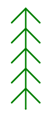

Прочтите про модуль turtle в python.
A. Выполните следующий пример:
import turtle # Подключаем модуль turtle
T = turtle.Turtle() #T — это наша черепашка. Можно создавать много черепашек
T.pencolor('red') # Поменять цвет пера на красный
T.pensize(3) # Установить толщину пера 3
T.pendown() # Опускаем перо (начало рисования)
T.forward(150) # Проползти 150 пикселей вперед
T.left(135) # Поворот влево на 135 градусов
T.forward(50) # Проползти 50 пикселей вперед
T.right(90) # Поворот вправо на 90 градусов
T.forward(50) # Проползти 50 пикселей вперед
turtle.mainloop() # Задержать окно на экране (эта команда должна быть последней)
Допишите программу так, чтобы получился флажок:
B. Выполните следующий пример:
import turtle # Подключаем модуль turtle
T = turtle.Turtle() # T — это наша черепашка. Можно создавать много черепашек
T.pencolor('red') # Поменять цвет пера на красный
T.pensize(3) # Установить толщину пера 3
T.pendown() # Опускаем перо (начало рисования)
T.forward(150) # Проползти 150 пикселей вперед
T.left(155) # Поворот влево на 135 градусов
T.forward(80) # Проползти 150 пикселей вперед
T.backward(80) # Проползти 50 пикселей назад
turtle.mainloop() # Задержать окно на экране
Допишите программу так, чтобы получилась стрелочка:
С. Напишите программу, рисующую стрелку, как на картинке.
Подсказка: наконечник стрелки - равносторонний треугольник.
Пример: программа, рисующая квадрат.
import turtle # Подключаем модуль turtle
T = turtle.Turtle() # T — это наша черепашка. Можно создавать много черепашек
T.pencolor('red') # Поменять цвет пера на красный
T.pensize(3) # Установить толщину пера 3
T.pendown() # Опускаем перо (начало рисования)
n = 4 # Задаём значение переменной n (число сторон квадрата)
size = 100 # Задаём значение переменной size (длина стороны квадрата
for i in range(n): # инструкции с отступом будут повторяться n раз
T.forward(size) # Проползти size пикселей вперед
T.left(90) # Поворот влево на 90 градусов
T.penup() # Поднимаем перо (черепашка не будет рисовать)
T.forward(200) # Отодвигаем черепашку в сторону
turtle.mainloop() # Задержать окно на экране
D. Напишите программу, рисующую пунктир. Задайте количество штрихов и длину штриха с помощью переменных.
E. Напишите программу, рисующую лесенку. Задайте количество ступенек, высоту и длину ступеньки с помощью переменных.
F. Напишите программу, рисующую ёлочку. Задайте длину отрезка и количество "веточек" с помощью переменных.

G. Напишите программу, рисующую а) правильный треугольник, б) правильный шестиугольник в) правильный 7-угольник, г) задайте количество сторон правильного многоугольника и длину его стороны с помощью переменных.
H. Напишите программу, рисующую правильную звёздочку. Задайте количество углов звёздочки и длину её стороны с помощью переменных.
I. Напишите программу, рисующую солнышко. Задайте длину и количество лучей, расстояние между лучами (для второго варианта) с помощью переменных.
J. Напишите программу, рисующую спираль. В начале программы задайте с помощью переменных шаг спирали, угол поворота и число звеньев.
Подсказка: шаг спирали должен меняться внутри цикла.
Рассмотрите картинки (они все нарисованы с помощью одной и той же программы с разными значениями переменных). Попробуйте нарисовать похожие с помощью своей программы. На какой угол надо поворачивать в каждом случае?